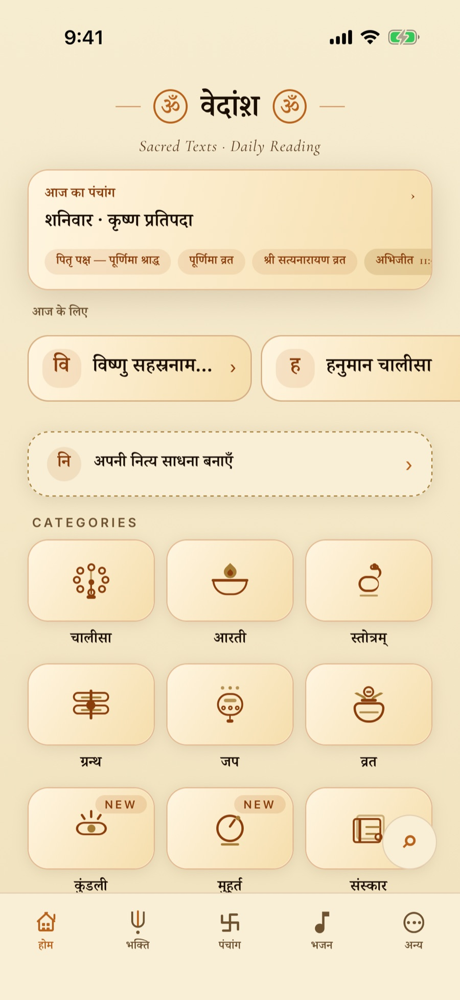
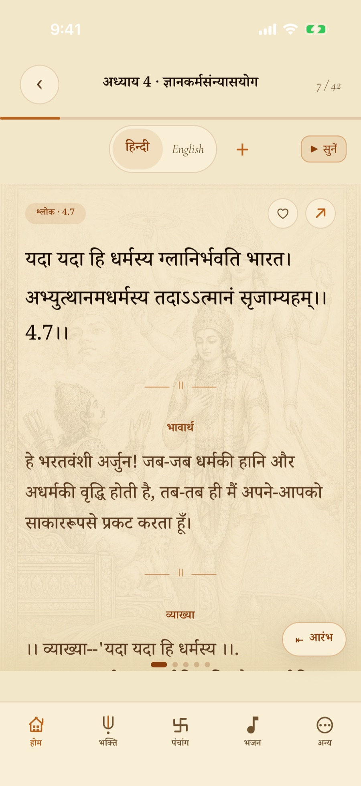
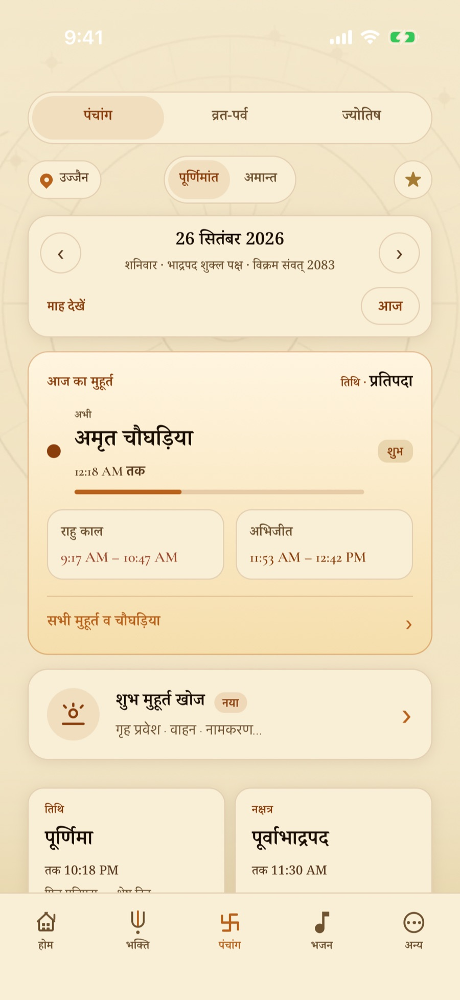
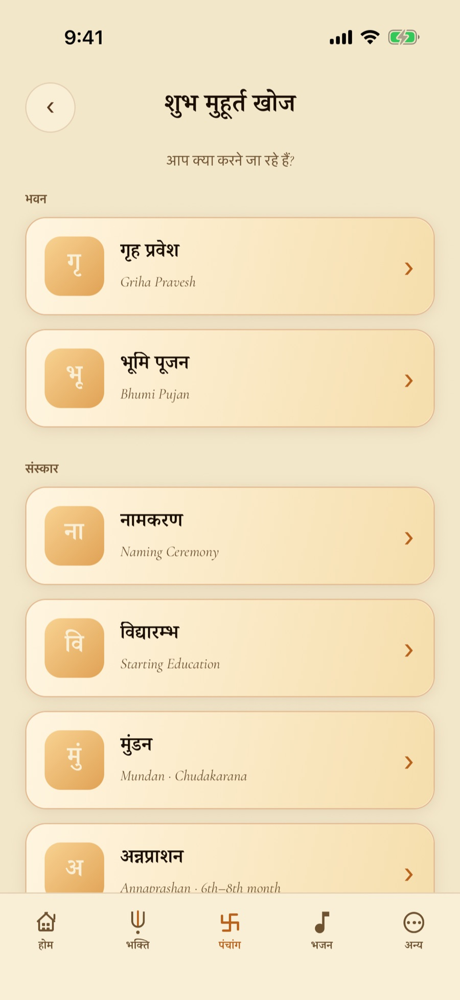
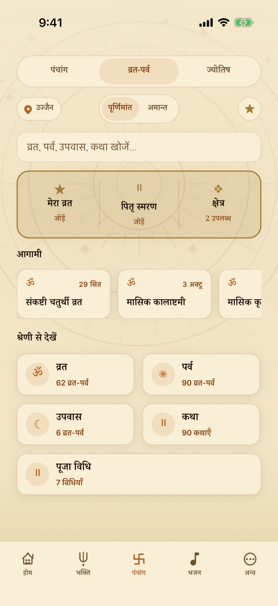
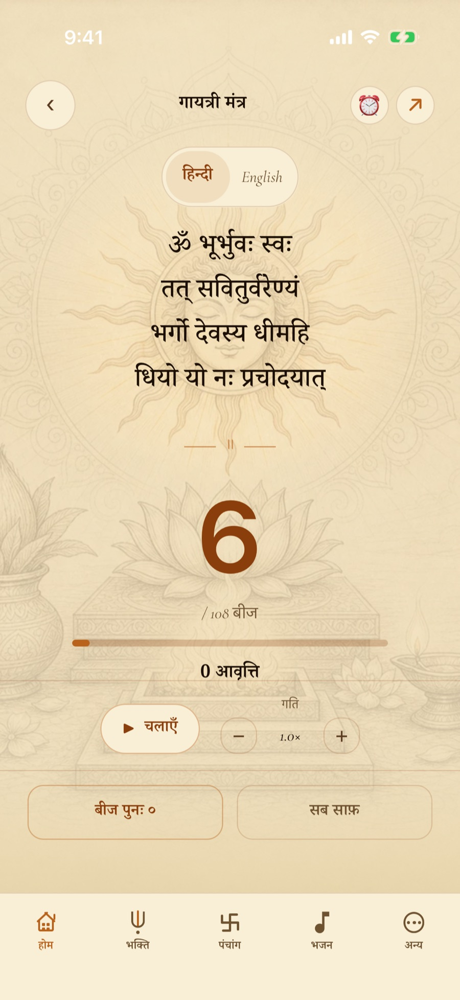
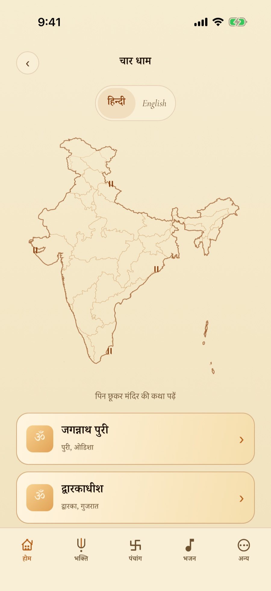
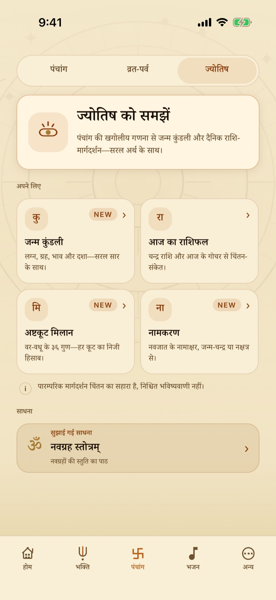

Vedansh
वेदांश़
भगवद् गीता, पंचांग और जप
वेदों का एक हिस्सा, आपकी जेब में। ग्रंथ ऐसे पढ़िए जैसे किताब पढ़ते हैं, अपने शहर का पंचांग देखिए, और एक साधना जो रोज़ चलती रहे।

- 701गीता के श्लोक
- 90व्रत और पर्व की कथाएँ
- 4पढ़ने की भाषाएँ
- 36मिलान के गुण
ग्रंथों का संग्रह
ऐसा पाठ, जैसे किताब पढ़ रहे हों
भगवद् गीता के सभी अठारह अध्याय और 701 श्लोक, अर्थ और व्याख्या के साथ। सुंदरकांड और रामचरितमानस के चुने हुए अंश, विष्णु सहस्रनाम, चालीसा, आरती, स्तोत्र, और बच्चों के लिए संस्कार — एक पन्ने पर एक श्लोक, उसी लिपि में जिसमें आप पढ़ते हैं।
- हर श्लोक हिन्दी और अंग्रेज़ी में — गुजराती और कन्नड़ भी
- संस्कृत ग्रंथों के साथ IAST लिप्यंतरण
- श्लोक से श्लोक स्वाइप कीजिए; जहाँ छोड़ा था वहीं से आगे
- अक्षर का आकार बदलिए, बुकमार्क लगाइए, श्लोक-कार्ड भेजिए
- पूरे संग्रह में तुरंत खोज

जाकी रही भावना जैसी।
प्रभु मूरति देखी तिन तैसी॥जिसके मन में जैसी भावना थी, उसने प्रभु की मूर्ति को वैसा ही देखा।
रामचरितमानस, बालकांड
पंचांग और मुहूर्त
आपके शहर का दिन, सही गणना के साथ
तिथि, नक्षत्र, योग, करण और सूर्योदय — असली खगोल गणना से, किसी बनी-बनाई सूची से नहीं। पूर्णिमांत और अमांत दोनों, विक्रम संवत, और पूरा महीना जिसे आप आगे-पीछे देख सकते हैं।
- रोज़ का मुहूर्त: चौघड़िया, राहु काल और अभिजित एक नज़र में
- 62 व्रत और 90 पर्व — जो आप मानते हैं, वही चुन लीजिए
- जो दिन आपने चुने, उनकी याद दिला दी जाएगी
- लोकेशन देना ज़रूरी नहीं; शहर खुद चुन लीजिए (उज्जैन पहले से चुना है)

कर्मण्येवाधिकारस्ते मा फलेषु कदाचन।
मा कर्मफलहेतुर्भूर्मा ते सङ्गोऽस्त्वकर्मणि।।2.47।।कर्तव्य-कर्म करनेमें ही तेरा अधिकार है, फलोंमें कभी नहीं। अतः तू कर्मफलका हेतु भी मत बन और तेरी अकर्मण्यतामें भी आसक्ति न हो।
भगवद् गीता 2.47
मुहूर्त
जो काम करना है, उसके लिए शुभ समय
दिन भर की चौघड़िया अलग बात है; तारीख़ चुनना अलग। वेदांश़ को बताइए कि आप क्या करने जा रहे हैं, और वह आगे के दिनों में सही समय ढूँढ़ देगा — साथ में वजह भी दिखाएगा।
- गृह प्रवेश, भूमि पूजन, गाड़ी लेना, और संस्कार — नामकरण, विद्यारम्भ, मुंडन, अन्नप्राशन
- हर समय की वजह साफ़: नक्षत्र, तिथि, वार और लग्न — कौन ठीक है, कौन नहीं
- सर्वार्थ सिद्धि जैसे शुभ योग अलग से दिखते हैं
- कोई मुहूर्त चुन लीजिए, समय आने पर याद आ जाएगा
- आज का राहु काल और अभिजित, हमेशा एक टैप दूर

यदा यदा हि धर्मस्य ग्लानिर्भवति भारत।
अभ्युत्थानमधर्मस्य तदाऽऽत्मानं सृजाम्यहम्।।4.7।।हे भरतवंशी अर्जुन! जब-जब धर्मकी हानि और अधर्मकी वृद्धि होती है, तब-तब ही मैं अपने-आपको साकाररूपसे प्रकट करता हूँ।
भगवद् गीता 4.7
व्रत, कथा और विधि
जो व्रत आप रखते हैं, और क्यों
जो व्रत आप रखते हैं उन्हें चुन लीजिए — वेदांश़ साल भर उनका ध्यान रखेगा। हर व्रत के साथ उसकी कथा भी और विधि भी, ताकि वह दिन सिर्फ़ कैलेंडर पर निशान बनकर न रह जाए।
- जो व्रत आप रखते हैं उन्हें चुनिए; ऐप साल भर याद रखेगा
- चाहें तो उन दिनों की याद दिला दी जाए
- व्रत और पर्वों की 90 कथाएँ, और 7 पूजा विधियाँ
- विधि हिन्दी और अंग्रेज़ी में: व्रत कैसे रखें, एक-एक कदम
- पितृ पक्ष की कथाएँ, और दान की कथाएँ भी

परित्राणाय साधूनां विनाशाय च दुष्कृताम्।
धर्मसंस्थापनार्थाय संभवामि युगे युगे।।4.8।।साधुओं-(भक्तों-) की रक्षा करनेके लिये, पापकर्म करनेवालोंका विनाश करनेके लिये और धर्मकी भलीभाँति स्थापना करनेके लिये मैं युग-युगमें प्रकट हुआ करता हूँ।
भगवद् गीता 4.8
रोज़ की साधना
ऐसी साधना जो सच में चलती रहे
हर दिन के देवता के हिसाब से अपनी रोज़ की या वार की साधना बनाइए। संकल्प लीजिए — चार से इकतालीस दिन का — और ऐप आपको पूरा होने तक साथ ले चलेगा।
- 4 से 41 दिन के संकल्प, पूरा होने तक साथ
- 108 मनकों की माला के लिए डिजिटल गिनती
- जप अलार्म: ॐ नमः शिवाय, गायत्री मंत्र या हरे कृष्ण महामंत्र के साथ उठिए — कौन से दिन बजे, यह भी आप तय कीजिए
- साधक प्रोफ़ाइल: पाठ, मनके, माला और लगातार कितने दिन

सर्वधर्मान्परित्यज्य मामेकं शरणं व्रज।
अहं त्वा सर्वपापेभ्यो मोक्षयिष्यामि मा शुचः।।18.66।।सम्पूर्ण धर्मोंका आश्रय छोड़कर तू केवल मेरी शरणमें आ जा। मैं तुझे सम्पूर्ण पापोंसे मुक्त कर दूँगा, चिन्ता मत कर।
भगवद् गीता 18.66
तीर्थ और सुनना
तीर्थ, और साथ में एक आवाज़
भारत के धाम असली नक्शे पर देखिए — राज्य से, तरह से, या यात्रा के क्रम से — हर मंदिर की कथा स्रोत के साथ। और भजन, मंत्र तथा आरती के लिए एक शांत प्लेयर, जो पीछे चलता रहता है।
- असली नक्शे पर धाम — राज्य, श्रेणी या यात्रा से देखिए
- हर जगह की कथा, स्रोत के साथ
- भजन, मंत्र और आरती ऐप के अंदर ही
- स्क्रीन बंद हो जाए तब भी सुनना चलता रहता है

न जायते म्रियते वा कदाचि
न्नायं भूत्वा भविता वा न भूयः।
अजो नित्यः शाश्वतोऽयं पुराणो
न हन्यते हन्यमाने शरीरे।।2.20।।यह शरीरी न कभी जन्मता है और न मरता है तथा यह उत्पन्न होकर फिर होनेवाला नहीं है। यह जन्मरहित, नित्य-निरन्तर रहनेवाला, शाश्वत और पुराण (अनादि) है। शरीरके मारे जानेपर भी यह नहीं मारा जाता।
भगवद् गीता 2.20
ज्योतिष
कुंडली, और मिलान जो सच बताए
जन्म कुंडली और राशि की बात उसी गणना से जिससे पंचांग बनता है, आसान भाषा में। और गुण मिलान — 36 गुणों का मिलान, जिसमें हर कूट अलग से दिखता और समझाया जाता है, सिर्फ़ एक नंबर बनकर नहीं रह जाता।
- कुंडली: लग्न, ग्रह, भाव और दशा, पूरी लिखी हुई रिपोर्ट के साथ
- गुण मिलान: निजी 36-गुण मिलान, हर कूट की व्याख्या के साथ
- नामकरण: जन्म के चंद्रमा से बच्चे का नामाक्षर
- रोज़ का राशिफल: आपकी चंद्र राशि से सोचने की बात
- यह सोचने में मदद के लिए है, पक्की भविष्यवाणी नहीं — ऐप भी यही कहता है

अनन्याश्चिन्तयन्तो मां ये जनाः पर्युपासते।
तेषां नित्याभियुक्तानां योगक्षेमं वहाम्यहम्।।9.22।।जो अनन्य भक्त मेरा चिन्तन करते हुए मेरी उपासना करते हैं, मेरेमें निरन्तर लगे हुए उन भक्तोंका योगक्षेम (अप्राप्तकी प्राप्ति और प्राप्तकी रक्षा) मैं वहन करता हूँ।
भगवद् गीता 9.22
उद्धरेदात्मनाऽऽत्मानं नात्मानमवसादयेत्।
आत्मैव ह्यात्मनो बन्धुरात्मैव रिपुरात्मनः।।6.5।।One should raise oneself by one's own self alone; let not one lower oneself; for the self alone is one's own friend, and the self alone is one's own enemy.
भगवद् गीता 6.5
ये भी साथ
और भी बहुत कुछ
ऊपर जो दिखा, वह रोज़ का काम है। ये सब भी साथ आते हैं।
- संस्कार — संस्कारों की बात, बच्चों की भाषा में
- शुभ आदतें — छोटी-छोटी रोज़ की आदतें, हिसाब के साथ
- होम-स्क्रीन विजेट — पंचांग, एक श्लोक, या आपकी जप गिनती
- खोज — पूरे संग्रह के लिए एक ही खोज
- दान कथाएँ — देने के पीछे की कहानियाँ
- पितृ पक्ष — श्राद्ध की तिथियाँ, स्मरण और कथाएँ
सवाल
जो अक्सर पूछे जाते हैं
क्या वेदांश़ मुफ़्त है?
हाँ। न कोई खाता बनाना है, न कोई सदस्यता लेनी है।
वेदांश़ में कौन-कौन से ग्रंथ हैं?
पूरी भगवद् गीता — सभी अठारह अध्याय और 701 श्लोक, अर्थ और व्याख्या के साथ — और सुंदरकांड व रामचरितमानस के चुने हुए अंश, विष्णु सहस्रनाम, चालीसा, आरती, स्तोत्र, कवच, अष्टकम् और सूक्तम्, और बच्चों के लिए संस्कार की पढ़ाई।
क्या पंचांग मेरे शहर के लिए काम करता है?
हाँ। तिथि, नक्षत्र, योग, करण और सूर्योदय आपकी जगह के लिए, या आपके चुने हुए शहर के लिए निकाले जाते हैं — उज्जैन पहले से चुना है। पूर्णिमांत और अमांत दोनों महीने, विक्रम संवत, और पूरा महीना कैलेंडर में।
क्या वेदांश़ दो कुंडलियों का मिलान कर सकता है?
हाँ। गुण मिलान 36 गुणों का निजी मिलान देता है, और सिर्फ़ अंक नहीं — हर कूट समझाता है। ऐप कुंडली भी बनाता है, लिखी हुई रिपोर्ट के साथ; नामकरण के लिए नामाक्षर सुझाता है; और रोज़ का राशिफल देता है — यह सब सोचने में मदद के लिए, पक्की भविष्यवाणी नहीं।
मैं किन भाषाओं में पढ़ सकता हूँ?
हर श्लोक हिन्दी (देवनागरी) और अंग्रेज़ी में, और पढ़ने के लिए गुजराती और कन्नड़ भी। संस्कृत ग्रंथों के साथ IAST लिप्यंतरण भी दिखता है।
क्या वेदांश़ Android और iPhone दोनों पर है?
दोनों पर। यह App Store और Google Play पर है, और vedansh.app/get आपको आपके फ़ोन के हिसाब से सही स्टोर पर भेज देता है।
आज का पाठ शुरू कीजिए
मुफ़्त। सभी ग्रंथ पब्लिक डोमेन के हिन्दू शास्त्रों से लिए गए हैं, पढ़ने और भक्ति के लिए आदर के साथ।